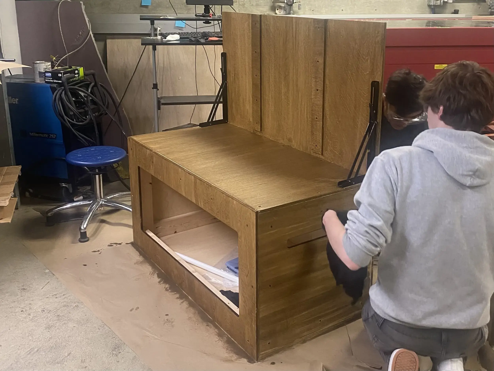
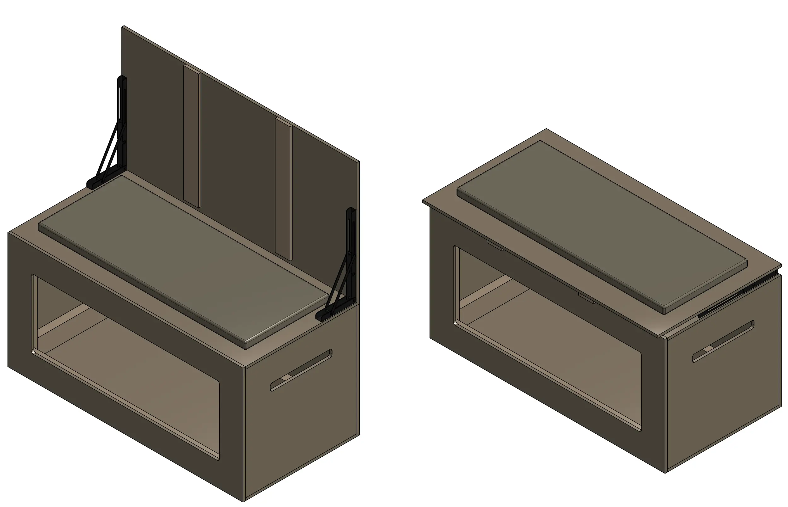

Safety-Oriented Product Design
Designed a bench-fence hybrid to prevent child drowning.

Overview
In the first quarter of Design Thinking & Communication (DTC), I worked with a team to design a portable pool barrier that prevents children from entering pool areas unsupervised. The problem was given to us by our client, Dr. Jonathan Midgett, the Consumer Ombudsman at the U.S. Consumer Product Safety Commission (CPSC), because child drowning is a leading cause of death for children under 5.
We called our solution the fench, a combination of a bench and a fence with a storage compartment. I led the design process, using CAD to model the prototype in Onshape and generate a cutlist to be constructed from plywood and 2x4 lumber. See Fig. 1. for the CAD drawings of the fench in the open and closed position, and see Fig. 2. for the CAD view of the 2x4 frame.
In the shop, we built the frame with the chop saw and wood screws (see Fig. 3.), cut plywood panels on the vertical saw, and laser-cut handles and the storage opening (see Fig. 4.). We used wood glue and screws to attach the plywood to the frame (see Fig. 5.), and two locking hinges to allow the bench to transform into a fence. See Fig. 6. for the front and Fig. 7. for the back. Additionally, see Fig. 8. for a video demo of the transformation.
We finished the fench with stain for aesthetics and a curtain to deter animals (see Fig. 9.). The final deliverables included a written report including sections such as users and requirements, design concept rationale, and future development. Additionally, our team gave a presentation to our client and at the DTC expo. See Fig. 10. for a team photo with our instructors, and see Fig. 11. for the poster I created.
Future developments include better waterproofing, wheels for easier deployment, and a clip-in safety gate so two units can form a scalable perimeter.
Gallery

Fig. 1. A CAD view of the fench in the open (left) and closed position (right).